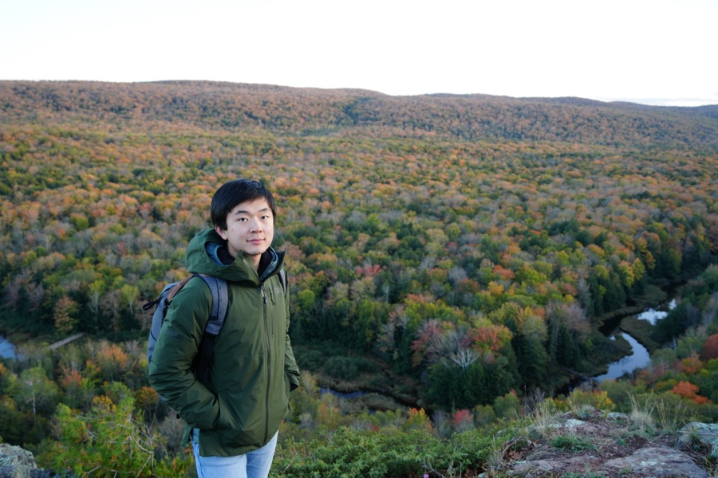

|
 |
Jiaming Yang (杨佳明)
Email: jiamyang [at] umich [dot] edu |
I am on the job market and expect to graduate in May 2027.
I am a fifth-year Ph.D. student in Computer Science at the University of Michigan, where I am advised by Prof. Michał Dereziński. Prior to that, I received my bachelor's degree from the School of Mathematical Sciences at Peking University.
My current research focuses on randomized numerical linear algebra (RandNLA), with applications to large-scale optimization and machine learning. More broadly, I am interested in machine learning, statistics, and optimization, with a focus on their theoretical foundations.
Outside of research, I enjoy rock climbing (both indoor and outdoor), photography, and playing poker.
Randomized Numerical Linear Algebra (RandNLA)
Machine Learning Theory
Large-Scale Optimization
Matrix-Based Optimizers for LLM Training (e.g., Muon, Shampoo)
α-β indicates alphabetical author order.
Faster Randomized Subspace Newton via Nesterov Acceleration. INFORMS Annual Meeting, San Francisco, Nov 2026
Randomized Kaczmarz Methods with Beyond-Krylov Convergence. ICCOPT, Los Angeles, Jul 2025
Faster Linear Systems via Multi-level Sketched Preconditioning. SODA, New Orleans, Jan 2025
Solving Dense Linear Systems Faster than via Preconditioning. UMich Theory Lunch, Mar 2024
EECS 376: Foundations of Computer Science, University of Michigan
Graduate Student Instructor (GSI), Winter 2026
Conference Reviewer: NeurIPS (2024, 2025), ICML (2025, 2026), ICLR (2027), AISTATS (2025, 2026)
Workshop Reviewer: M3L (2024), MOSS (2025)